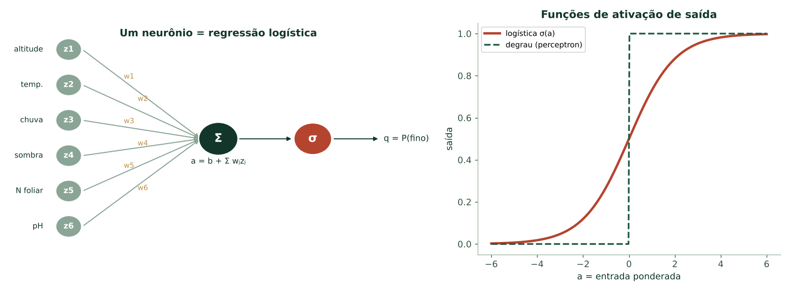
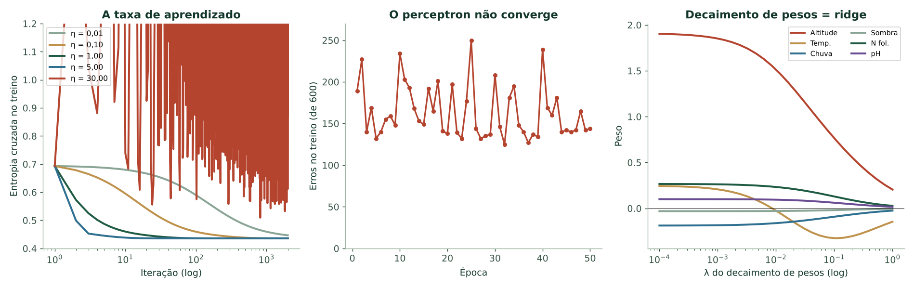

Rede sem camada oculta (classificador logístico)
Um único neurônio logístico — soma ponderada, ativação e entropia cruzada — que é, exatamente, a regressão logística.
Comece por aqui
Uma rede neural sem camada oculta tem um único neurônio de saída: recebe as variáveis, multiplica cada uma por um peso, soma, acrescenta um viés e aplica uma função de ativação. Com a ativação logística e a perda de entropia cruzada, esse neurônio é exatamente a regressão logística. A ficha mostra isso numericamente — os pesos treinados por descida do gradiente coincidem com os do glm até a quarta casa — e usa o caso mais simples para apresentar o vocabulário das redes: pesos, ativação, perda, gradiente, taxa de aprendizado, decaimento de pesos.
Tudo o que se faz com redes profundas — retropropagação, escolha da taxa de aprendizado, decaimento de pesos, camadas softmax — já existe neste neurônio, num problema convexo cuja solução se conhece de antemão. É o único caso em que se pode verificar cada número contra uma resposta exata.
O que é a rede sem camada oculta
Para cada observação, a entrada ponderada é \(a=b+\sum_jw_jz_j\) e a saída, \(q=\sigma(a)=1/(1+e^{-a})\), é a probabilidade estimada da classe 1. Os pesos são ajustados para minimizar a entropia cruzada média — a log-verossimilhança negativa da regressão logística. O perceptron de Rosenblatt (1958) é a versão histórica, com saída em degrau e uma regra de correção em vez de gradiente.

| Redes neurais | Estatística |
|---|---|
| Pesos w | Coeficientes β |
| Viés b | Intercepto |
| Ativação logística | Função de ligação logito (inversa) |
| Entropia cruzada | Log-verossimilhança negativa (binomial) |
| Decaimento de pesos | Penalidade ridge |
| Época | Uma passada pelos dados |
| Camada softmax | Regressão multinomial |
Pressupostos e como verificá-los
| Pressuposto ou cuidado | Por que importa | Como verificar |
|---|---|---|
| Observações independentes | Verossimilhança fatorada. | Desenho. |
| Fronteira linear no logito | É tudo o que um neurônio representa. | Compare com uma camada oculta ou com árvores. |
| Variáveis padronizadas | A descida do gradiente converge muito melhor. | scale(). |
| Taxa de aprendizado adequada | Pequena demais: lenta; grande demais: diverge. | Curva da perda por iteração. |
| Convergência | Parar cedo dá pesos encolhidos. | Compare com o glm. |
Formulação e cálculo
Em que:
- \(z_i\)
- vetor de variáveis padronizadas do lote \(i\)
- \(\sigma\)
- função logística
- \(L\)
- entropia cruzada média, mais a penalidade de decaimento de pesos
- \(\lambda\)
- intensidade do decaimento (ridge)
O gradiente tem uma forma simples, a mesma da regressão logística — e é o ponto de partida da retropropagação nas redes com camadas:
Em que:
- \(q_i-y_i\)
- o erro na escala da probabilidade
- \(\eta\)
- taxa de aprendizado
Exemplo numérico: as três primeiras iterações (η = 0,5, partindo de zero)
| Iteração | Perda | Gradiente (altitude) | Gradiente (b) | Novo w altitude | Novo b |
|---|---|---|---|---|---|
| 1 | 0,6931 | −0,2769 | 0,1600 | 0,1385 | −0,0800 |
| 2 | 0,6253 | −0,2207 | 0,1403 | 0,2488 | −0,1501 |
| 3 | 0,5819 | −0,1791 | 0,1241 | 0,3384 | −0,2122 |
Com todos os pesos em zero, \(q_i=0{,}5\) para todos, e a perda é \(-\log0{,}5=0{,}6931\). O gradiente do viés é a média de \(q-y=0{,}5-0{,}34=0{,}1600\): positivo, porque a rede superestima a proporção de finos; o passo leva \(b\) a \(-0{,}5\times0{,}16=-0{,}08\). O gradiente da altitude é negativo (−0,2769), porque lotes altos têm \(y=1\) e \(q-y<0\): o passo aumenta o peso da altitude para 0,1385.
Propriedades
- O problema é convexo: há um único mínimo, e a descida do gradiente o encontra com η adequado.
- No mínimo, os pesos são as estimativas de máxima verossimilhança da regressão logística.
- O decaimento de pesos é a penalidade ridge.
- Com dados separáveis e sem decaimento, os pesos crescem sem limite.
- O perceptron converge só se os dados forem linearmente separáveis.
- Com saída softmax e K classes, é a regressão multinomial.
Como interpretar os resultados
| Elemento | O que informa | Cuidado |
|---|---|---|
| Pesos | Efeitos no logito por desvio-padrão da variável. | São os coeficientes da logística padronizada. |
| Curva da perda | Se a taxa de aprendizado serve. | Oscilação: η grande demais. |
| Norma dos pesos com decaimento | Quanto a penalidade encolheu. | λ grande encolhe tudo para zero. |
| Saída softmax | Probabilidade de cada classe. | Igual à multinomial. |
Como executar no R e em Python
Onde executar o código em Python
Não é preciso instalar nada: o Google Colab é um computador na nuvem, gratuito, que executa Python pelo navegador e já traz as bibliotecas usadas aqui (numpy, scipy e matplotlib).
O pacote nnet (Venables e Ripley), que vem com o R, ajusta redes com uma camada oculta; com size = 0 e skip = TRUE não há camada oculta, só as ligações diretas da entrada para a saída. O argumento decay é o decaimento de pesos, sobre a soma (não a média) da perda. multinom(), do mesmo pacote, é a versão softmax para várias classes. Na prática, para este modelo, o glm(…, family = binomial) dá a mesma resposta com erros-padrão e testes.
library(nnet)
Z <- data.frame(scale(cafe[, c("alt","temp","chuva","somb","nfol","ph")]), fino_f = cafe$fino_f)
n0 <- nnet(fino_f ~ ., data = Z, size = 0, skip = TRUE, maxit = 1000)
coef(n0)
coef(glm(fino_f ~ ., data = Z, family = binomial)) # os mesmos
Exemplo de aplicação
Contexto dos dados
Os dados são fictícios e foram criados pelo autor: 600 lotes de café, cada um com a nota sensorial (escala SCA, de 70,0 a 86,1) e seis variáveis da lavoura — altitude (600 a 1.500 m), temperatura média (14 a 26 °C), chuva anual (mm), sombreamento (%), nitrogênio foliar (dag/kg) e pH do solo. Um lote é fino quando a nota é 80 ou mais (204 lotes, 34,0%). O processo gerador é conhecido e foi desenhado para ter as duas estruturas que os modelos aditivos não representam: um degrau de +4,6 pontos acima de 1.050 m de altitude e uma interação — o sombreamento melhora a nota quando a temperatura passa de 20,5 °C e a piora abaixo disso —, além de partes suaves em chuva, nitrogênio e pH e um erro de desvio-padrão 1,55. Altitude e temperatura têm correlação de −0,822, como na realidade. Como a verdade é conhecida, sabem-se os dois pisos: nenhum modelo de regressão pode ter erro quadrático esperado abaixo de \(\sigma^2=2{,}4025\), e nenhum classificador pode errar menos que o erro de Bayes, 0,1596. O mesmo conjunto atravessa as dez fichas dos grupos de árvores e de classificadores, o que permite comparar todos os métodos na mesma régua.
Código em R
# Rede sem camada oculta (um neurônio = classificador logístico): exemplo completo ----
# Pacote: nnet (incluído na instalação do R)
# Dados fictícios: 600 lotes de café (arquivo cafe.csv, pasta scripts/ do site).
# Baixe o arquivo para a pasta de trabalho, ou leia direto do endereço:
url <- "https://cassiushenrique.github.io/ModelosEstatisticos/scripts/cafe.csv"
cafe <- if (file.exists("cafe.csv")) read.csv("cafe.csv") else read.csv(url)
str(cafe) # nota, fino (0/1), alt, temp, chuva, somb, nfol, ph
cafe$fino_f <- factor(cafe$fino, levels = c(0, 1), labels = c("nao", "fino"))
table(cafe$fino_f)
vars <- c("alt", "temp", "chuva", "somb", "nfol", "ph")
Z <- scale(cafe[, vars]); y <- cafe$fino
sig <- function(a) 1 / (1 + exp(-a))
# ---- 1. Descida do gradiente à mão
w <- rep(0, 6); b <- 0; eta <- 1
for (it in 1:20000) {
q <- sig(b + Z %*% w)
w <- w - eta * t(Z) %*% (q - y) / nrow(Z)
b <- b - eta * mean(q - y)
}
# ---- 2. ... é a regressão logística
g <- glm(y ~ Z, family = binomial)
cbind(gradiente = c(b, w), glm = coef(g))
# ---- 3. A mesma rede no nnet: size = 0 e skip = TRUE = sem camada oculta
library(nnet)
n0 <- nnet(fino_f ~ alt + temp + chuva + somb + nfol + ph,
data = data.frame(Z, fino_f = cafe$fino_f), size = 0, skip = TRUE,
decay = 0, maxit = 1000)
coef(n0)
# ---- 4. Decaimento de pesos (weight decay) = penalidade ridge
for (lam in c(0, 0.01, 0.1, 1)) {
n1 <- nnet(fino_f ~ ., data = data.frame(Z, fino_f = cafe$fino_f), size = 0, skip = TRUE,
decay = lam * nrow(Z), maxit = 1000, trace = FALSE)
cat("lambda", lam, ": |w| =", sqrt(sum(coef(n1)[-1]^2)), "\n") }
# (o nnet soma a perda sobre as observações; por isso decay = lambda * n)
# ---- 5. O perceptron de Rosenblatt
ys <- 2 * y - 1; w <- rep(0, 6); b <- 0; set.seed(0)
for (ep in 1:50) {
for (i in sample(nrow(Z))) if (ys[i] * (sum(Z[i, ] * w) + b) <= 0) {
w <- w + ys[i] * Z[i, ]; b <- b + ys[i] }
if (ep %% 10 == 0) cat("época", ep, ": erros", sum(ys * (Z %*% w + b) <= 0), "\n") }
# ---- 6. Três classes: camada de saída softmax = regressão multinomial
cafe$classe <- cut(cafe$nota, c(-Inf, 76, 80, Inf), right = FALSE,
labels = c("comercial", "bom", "fino"))
mm <- multinom(classe ~ ., data = data.frame(Z, classe = cafe$classe))
table(real = cafe$classe, previsto = predict(mm))
A mesma análise em Python, com os resultados
Cole o código em um notebook do Google Colab ↗ e execute com Shift+Enter. Os valores abaixo são a saída desse código.
import numpy as np
# ------------------------------------------------------------------
# Bloco comum às fichas deste grupo: funções auxiliares e dados (cab16)
# ------------------------------------------------------------------
import numpy as np
from scipy.stats import norm
# ------------------------------------------------------------------
# Bloco comum às fichas deste grupo: funções auxiliares e dados (dados16)
# ------------------------------------------------------------------
import numpy as np
import pandas as pd
def le_csv(nome):
"""Lê o arquivo de dados da ficha: primeiro na pasta atual; se não
estiver lá (por exemplo, no Google Colab), direto do site."""
try:
return pd.read_csv(nome)
except FileNotFoundError:
return pd.read_csv('https://cassiushenrique.github.io/ModelosEstatisticos/scripts/' + nome)
# Dados fictícios: 600 lotes de café (arquivo cafe.csv, pasta scripts/ do site)
cafe = le_csv('cafe.csv')
ALT, TEMP, CHUVA = (cafe[k].to_numpy(float) for k in ('alt', 'temp', 'chuva'))
SOMB, NFOL, PH = (cafe[k].to_numpy(float) for k in ('somb', 'nfol', 'ph'))
NOTA = cafe['nota'].to_numpy(float); FINO = cafe['fino'].to_numpy(int)
NOMES=['alt','temp','chuva','somb','nfol','ph']
ROT={'alt':'Altitude','temp':'Temperatura','chuva':'Chuva','somb':'Sombreamento','nfol':'N foliar','ph':'pH'}
X=np.column_stack([ALT,TEMP,CHUVA,SOMB,NFOL,PH])
NC,PC=X.shape; SIGN=1.55
def f_nota(alt,temp,chuva,somb,nfol,ph):
deg=4.6*(np.asarray(alt)>=1050); rampa=0.0028*np.clip(np.asarray(alt)-700,0,None)
inter=np.where(np.asarray(temp)>20.5,0.052*np.asarray(somb),-0.030*np.asarray(somb))
agua=-2.6e-6*(np.asarray(chuva)-1450)**2
nitro=2.9*np.log(np.asarray(nfol)/1.6); acid=-1.9*(np.asarray(ph)-5.4)**2
return 74.0+deg+rampa+inter+agua+nitro+acid
def verdade(A): return f_nota(A[:,0],A[:,1],A[:,2],A[:,3],A[:,4],A[:,5])
# ------------------------------------------------------------------ fim do bloco comum
def c(v, d=4): return ('%.*f' % (d, v)).replace('.', ',')
def eqm(o, p): return float(np.mean((np.asarray(o) - np.asarray(p))**2))
def r2(o, p): return 1 - float(np.sum((np.asarray(o)-np.asarray(p))**2))/float(np.sum((np.asarray(o)-np.mean(o))**2))
def acur(o, p): return float(np.mean(np.asarray(o) == np.asarray(p)))
MU = verdade(X) # média verdadeira da nota
PVER = 1 - norm.cdf((80 - MU)/SIGN) # P(fino | x) verdadeira
ERRO_BAYES = float(np.mean(np.minimum(PVER, 1 - PVER)))
EQM_PISO = SIGN**2
def dobras(n, k, seed):
rg = np.random.default_rng(seed)
d = np.tile(np.arange(k), int(np.ceil(n/k)))[:n]; rg.shuffle(d); return d
def cv_reg(fabrica, A, y, k=10, seed=0, reps=1):
"""EQM por validação cruzada. fabrica() devolve um estimador sklearn novo."""
tot = []
for r in range(reps):
d = dobras(len(y), k, seed + 101*r); e = np.empty(len(y))
for j in range(k):
tr, te = d != j, d == j
m = fabrica().fit(A[tr], y[tr]); e[te] = y[te] - m.predict(A[te])
tot.append(float(np.mean(e**2)))
return float(np.mean(tot)), (float(np.std(tot, ddof=1)) if reps > 1 else 0.0)
def cv_clf(fabrica, A, y, k=10, seed=0, reps=1, prob=False):
"""Erro de classificação (e, se prob, log-loss e Brier) por validação cruzada."""
err = []; ll = []; br = []
for r in range(reps):
d = dobras(len(y), k, seed + 101*r); pred = np.empty(len(y)); pp = np.empty(len(y))
for j in range(k):
tr, te = d != j, d == j
m = fabrica().fit(A[tr], y[tr]); pred[te] = m.predict(A[te])
if prob: pp[te] = m.predict_proba(A[te])[:, 1]
err.append(float(np.mean(pred != y)))
if prob:
q = np.clip(pp, 1e-6, 1 - 1e-6)
ll.append(float(-np.mean(y*np.log(q) + (1 - y)*np.log(1 - q))))
br.append(float(np.mean((pp - y)**2)))
if prob: return float(np.mean(err)), float(np.mean(ll)), float(np.mean(br))
return float(np.mean(err)), (float(np.std(err, ddof=1)) if reps > 1 else 0.0)
def padroniza(A, ref=None):
ref = A if ref is None else ref
mu, sd = ref.mean(0), ref.std(0, ddof=1); return (A - mu)/sd, mu, sd
DADOS_TXT = ('600 lotes de café, nota sensorial (escala SCA, de 70 a 86) e seis variáveis de lavoura: '
'altitude, temperatura média, chuva anual, sombreamento, N foliar e pH. Lote "fino" = nota >= 80.')
# ------------------------------------------------------------------ fim do bloco comum
from sklearn.linear_model import LogisticRegression
y=FINO
print('LOTES DE CAFÉ:',DADOS_TXT)
print('Resposta: fino (1) ou não (0). Erro de Bayes = %s.'%c(ERRO_BAYES))
Z,mu,sd=padroniza(X); n,p=Z.shape
sig=lambda t: 1/(1+np.exp(-t))
print('\n'+'='*70)
print('UM NEURÔNIO: entrada ponderada, soma, função de ativação')
print(' a = b + w1 z1 + ... + w6 z6 ; saída = sigma(a) = 1/(1 + e^-a)')
print('É exatamente o modelo de regressão logística, escrito como rede.')
print('\n'+'='*70)
print('TREINO POR DESCIDA DO GRADIENTE, à mão')
print('Perda: entropia cruzada média L = -(1/n) soma[y log q + (1-y) log(1-q)]')
print('Gradiente: dL/dw = (1/n) Z\'(q - y) ; dL/db = média(q - y)')
def treina(Z,y,eta,iters,lam=0.0,w0=None):
w=np.zeros(Z.shape[1]) if w0 is None else w0.copy(); b=0.0; hist=[]
for t in range(iters):
q=sig(Z@w+b); g=Z.T@(q-y)/len(y)+lam*w; gb=np.mean(q-y)
w-=eta*g; b-=eta*gb
hist.append(float(-np.mean(y*np.log(q+1e-12)+(1-y)*np.log(1-q+1e-12))))
return w,b,hist
print()
print('As três primeiras iterações, com taxa de aprendizado eta = 0,5:')
w=np.zeros(p); b=0.0
for t in range(3):
q=sig(Z@w+b); g=Z.T@(q-y)/n; gb=np.mean(q-y)
print(' it. %d: perda = %s | grad. altitude = %s | grad. b = %s'%(t+1,c(float(-np.mean(y*np.log(q)+(1-y)*np.log(1-q)))),c(g[0]),c(gb)))
w-=0.5*g; b-=0.5*gb
print(' novo w_altitude = %s, novo b = %s'%(c(w[0]),c(b)))
print('\n'+'='*70)
print('A TAXA DE APRENDIZADO')
print()
print('%8s %14s %14s %14s %14s'%('eta','perda it. 10','perda it. 100','perda it. 2000','convergiu?'))
ref=LogisticRegression(C=1e10,max_iter=10000,tol=1e-12).fit(Z,y)
Lref=float(-np.mean(y*np.log(ref.predict_proba(Z)[:,1])+(1-y)*np.log(ref.predict_proba(Z)[:,0])))
for eta in [0.01,0.1,1.0,5.0,30.0]:
_,_,h=treina(Z,y,eta,2000)
print('%8s %14s %14s %14s %14s'%(c(eta,2),c(h[9]),c(h[99]),c(h[-1]),'sim' if abs(h[-1]-Lref)<1e-4 else 'não'))
print(' perda mínima (máxima verossimilhança) = %s'%c(Lref))
print('\n'+'='*70)
print('O NEURÔNIO TREINADO É A REGRESSÃO LOGÍSTICA')
w,b,h=treina(Z,y,1.0,20000)
print()
print('%-14s %16s %20s'%('peso','descida do grad.','glm (máx. veross.)'))
print('%-14s %16s %20s'%('intercepto',c(b),c(ref.intercept_[0])))
for j,k in enumerate(NOMES): print('%-14s %16s %20s'%(ROT[k],c(w[j]),c(ref.coef_[0,j])))
print('\n'+'='*70)
print('DECAIMENTO DE PESOS (weight decay) = penalidade ridge')
print('Perda + (lambda/2) |w|²; a rede encolhe os pesos em direção a zero.')
print()
print('%10s %12s %12s %16s'%('lambda','|w|','w_altitude','erro 10-fold'))
class Neur:
def __init__(s,lam): s.lam=lam
def fit(s,A,b):
s.m,s.s=A.mean(0),A.std(0,ddof=1); s.w,s.b,_=treina((A-s.m)/s.s,b,1.0,3000,s.lam); return s
def predict_proba(s,A):
q=sig(((A-s.m)/s.s)@s.w+s.b); return np.column_stack([1-q,q])
def predict(s,A): return (s.predict_proba(A)[:,1]>=.5).astype(int)
for lam in [0,0.001,0.01,0.1,1.0]:
w,_,_=treina(Z,y,1.0,3000,lam); er,_=cv_clf(lambda lam=lam: Neur(lam),X,y,10,0,2)
print('%10s %12s %12s %16s'%(c(lam,3),c(np.linalg.norm(w)),c(w[0]),c(er)))
print('\n'+'='*70)
print('O PERCEPTRON DE ROSENBLATT: saída em degrau e regra de correção')
print('Se o lote é mal classificado: w <- w + y_i z_i (rótulos -1 e +1).')
ys=2*y-1; w=np.zeros(p); b=0.0; rg=np.random.default_rng(0)
print()
print('%8s %18s'%('época','erros no treino'))
for ep in range(1,51):
for i in rg.permutation(n):
if ys[i]*(Z[i]@w+b)<=0: w+=ys[i]*Z[i]; b+=ys[i]
if ep in (1,2,5,10,20,50): print('%8d %18d'%(ep,int(np.sum(ys*(Z@w+b)<=0))))
print('As classes não são linearmente separáveis: o perceptron nunca para de')
print('corrigir, e o número de erros oscila sem convergir.')
print('\n'+'='*70)
print('MAIS DE DUAS CLASSES: a camada de saída softmax')
cls=np.digitize(NOTA,[76,80]) # 0 = comercial (<76), 1 = bom, 2 = fino
print('Classes: comercial (nota < 76), bom (76 a 80), fino (>= 80).')
print(' contagens: %s'%', '.join('%d'%np.sum(cls==k) for k in range(3)))
Y=np.eye(3)[cls]; W=np.zeros((p,3)); B=np.zeros(3)
for t in range(5000):
A=Z@W+B; A-=A.max(1,keepdims=True); P=np.exp(A); P/=P.sum(1,keepdims=True)
W-=0.5*Z.T@(P-Y)/n; B-=0.5*np.mean(P-Y,0)
pred=P.argmax(1)
print()
print('Matriz de confusão (treino):')
print('%12s %10s %10s %10s'%('real \\ prev.','comercial','bom','fino'))
for k,nm in enumerate(['comercial','bom','fino']):
print('%12s %10d %10d %10d'%(nm,*[np.sum((cls==k)&(pred==j)) for j in range(3)]))
print(' acurácia = %s'%c(acur(cls,pred)))
print('\n'+'='*70)
print('O QUE UM NEURÔNIO NÃO CONSEGUE: a interação')
print('A fronteira é um hiperplano. O efeito do sombreamento tem de ter o')
print('MESMO sinal em qualquer temperatura. Nos dados, comparando a nota média')
print('de lotes com sombra alta e baixa, separadamente por clima:')
for nm,s_ in [('temperatura <= 20,5 C',X[:,1]<=20.5),('temperatura > 20,5 C',X[:,1]>20.5)]:
hi=s_&(X[:,3]>=35); lo=s_&(X[:,3]<20)
print(' %-22s nota média, sombra >= 35%%: %s (n=%d) | sombra < 20%%: %s (n=%d)'%(nm,c(NOTA[hi].mean(),2),hi.sum(),c(NOTA[lo].mean(),2),lo.sum()))
w,b,_=treina(Z,y,1.0,20000)
print(' peso do sombreamento no neurônio: %s (um só sinal para os dois climas)'%c(w[3]))
print('A ficha seguinte acrescenta uma camada oculta para resolver isso.')
Resultados da execução
LOTES DE CAFÉ: 600 lotes de café, nota sensorial (escala SCA, de 70 a 86) e seis variáveis de lavoura: altitude, temperatura média, chuva anual, sombreamento, N foliar e pH. Lote "fino" = nota >= 80.
Resposta: fino (1) ou não (0). Erro de Bayes = 0,1596.
======================================================================
UM NEURÔNIO: entrada ponderada, soma, função de ativação
a = b + w1 z1 + ... + w6 z6 ; saída = sigma(a) = 1/(1 + e^-a)
É exatamente o modelo de regressão logística, escrito como rede.
======================================================================
TREINO POR DESCIDA DO GRADIENTE, à mão
Perda: entropia cruzada média L = -(1/n) soma[y log q + (1-y) log(1-q)]
Gradiente: dL/dw = (1/n) Z'(q - y) ; dL/db = média(q - y)
As três primeiras iterações, com taxa de aprendizado eta = 0,5:
it. 1: perda = 0,6931 | grad. altitude = -0,2769 | grad. b = 0,1600
novo w_altitude = 0,1385, novo b = -0,0800
it. 2: perda = 0,6253 | grad. altitude = -0,2207 | grad. b = 0,1403
novo w_altitude = 0,2488, novo b = -0,1501
it. 3: perda = 0,5819 | grad. altitude = -0,1791 | grad. b = 0,1241
novo w_altitude = 0,3384, novo b = -0,2122
======================================================================
A TAXA DE APRENDIZADO
eta perda it. 10 perda it. 100 perda it. 2000 convergiu?
0,01 0,6800 0,5898 0,4467 não
0,10 0,5951 0,4594 0,4359 sim
1,00 0,4600 0,4361 0,4359 sim
5,00 0,4384 0,4359 0,4359 sim
30,00 0,7384 2,8260 2,5479 não
perda mínima (máxima verossimilhança) = 0,4359
======================================================================
O NEURÔNIO TREINADO É A REGRESSÃO LOGÍSTICA
peso descida do grad. glm (máx. veross.)
intercepto -1,0714 -1,0714
Altitude 1,9093 1,9093
Temperatura 0,2485 0,2485
Chuva -0,1879 -0,1879
Sombreamento -0,0306 -0,0306
N foliar 0,2665 0,2665
pH 0,1001 0,1001
======================================================================
DECAIMENTO DE PESOS (weight decay) = penalidade ridge
Perda + (lambda/2) |w|²; a rede encolhe os pesos em direção a zero.
lambda |w| w_altitude erro 10-fold
0,000 1,9556 1,9093 0,2317
0,001 1,8937 1,8519 0,2308
0,010 1,5430 1,5133 0,2300
0,100 0,8494 0,7658 0,2308
1,000 0,2549 0,2051 0,3342
======================================================================
O PERCEPTRON DE ROSENBLATT: saída em degrau e regra de correção
Se o lote é mal classificado: w <- w + y_i z_i (rótulos -1 e +1).
época erros no treino
1 189
2 227
5 132
10 234
20 138
50 144
As classes não são linearmente separáveis: o perceptron nunca para de
corrigir, e o número de erros oscila sem convergir.
======================================================================
MAIS DE DUAS CLASSES: a camada de saída softmax
Classes: comercial (nota < 76), bom (76 a 80), fino (>= 80).
contagens: 157, 239, 204
Matriz de confusão (treino):
real \ prev. comercial bom fino
comercial 96 60 1
bom 49 117 73
fino 4 61 139
acurácia = 0,5867
======================================================================
O QUE UM NEURÔNIO NÃO CONSEGUE: a interação
A fronteira é um hiperplano. O efeito do sombreamento tem de ter o
MESMO sinal em qualquer temperatura. Nos dados, comparando a nota média
de lotes com sombra alta e baixa, separadamente por clima:
temperatura <= 20,5 C nota média, sombra >= 35%: 78,32 (n=110) | sombra < 20%: 79,50 (n=151)
temperatura > 20,5 C nota média, sombra >= 35%: 78,56 (n=64) | sombra < 20%: 75,98 (n=97)
peso do sombreamento no neurônio: -0,0306 (um só sinal para os dois climas)
A ficha seguinte acrescenta uma camada oculta para resolver isso.
| η | Perda na it. 10 | Na it. 100 | Na it. 2.000 | Convergiu? |
|---|---|---|---|---|
| 0,01 | 0,6800 | 0,5898 | 0,4467 | não |
| 0,10 | 0,5951 | 0,4594 | 0,4359 | sim |
| 1,00 | 0,4600 | 0,4361 | 0,4359 | sim |
| 5,00 | 0,4384 | 0,4359 | 0,4359 | sim |
| 30,00 | 0,7384 | 2,8260 | 2,5479 | não |
| Peso | Descida do gradiente | glm (máxima verossimilhança) |
|---|---|---|
| Intercepto | −1,0714 | −1,0714 |
| Altitude | 1,9093 | 1,9093 |
| Temperatura | 0,2485 | 0,2485 |
| Chuva | −0,1879 | −0,1879 |
| Sombreamento | −0,0306 | −0,0306 |
| N foliar | 0,2665 | 0,2665 |
| pH | 0,1001 | 0,1001 |
| λ | |w| | w altitude | Erro 10-fold |
|---|---|---|---|
| 0 | 1,9556 | 1,9093 | 0,2317 |
| 0,001 | 1,8937 | 1,8519 | 0,2308 |
| 0,01 | 1,5430 | 1,5133 | 0,2300 |
| 0,1 | 0,8494 | 0,7658 | 0,2308 |
| 1 | 0,2549 | 0,2051 | 0,3342 |
| Época | Erros no treino (de 600) |
|---|---|
| 1 | 189 |
| 2 | 227 |
| 5 | 132 |
| 10 | 234 |
| 20 | 138 |
| 50 | 144 |
| Real \ previsto | Comercial | Bom | Fino |
|---|---|---|---|
| Comercial (157) | 96 | 60 | 1 |
| Bom (239) | 49 | 117 | 73 |
| Fino (204) | 4 | 61 | 139 |
Leitura: a segunda tabela é o resultado central: os pesos obtidos por descida do gradiente e os coeficientes do glm coincidem em todas as casas mostradas. Um neurônio logístico é uma regressão logística; o que muda é só o algoritmo de ajuste.
A taxa de aprendizado: com η = 0,01, depois de 2.000 iterações a perda ainda está em 0,4467, longe do mínimo 0,4359. Com η = 30, os passos são grandes demais e a perda sobe para 2,5 — a descida do gradiente diverge. Entre 0,1 e 5, chega-se ao mínimo. Em redes maiores não se conhece o mínimo, e a curva da perda é a única forma de diagnosticar o problema.
O decaimento de pesos quase não muda o erro até λ = 0,1 (de 0,2317 para 0,2308), mesmo com a norma dos pesos caindo de 1,96 para 0,85: com 600 lotes e 7 parâmetros, não há sobreajuste para corrigir. Com λ = 1, os pesos são encolhidos demais e o erro sobe para 0,3342. O perceptron nunca para: o número de erros oscila entre 132 e 234, porque nenhum hiperplano separa as classes.
O limite: com a mesma fronteira linear, o erro fica em 23%, contra 19% da árvore de três folhas. E há o que um neurônio não pode representar: nos dados, a sombra alta reduz a nota média no clima fresco (78,32 contra 79,50) e a aumenta no clima quente (78,56 contra 75,98), mas o peso do sombreamento é um só (−0,0306) para os dois climas. A ficha seguinte acrescenta uma camada oculta para resolver isso.
Erros comuns
| Erro | Como evitar |
|---|---|
| Não padronizar as entradas | A descida do gradiente fica lenta e instável. |
| Taxa de aprendizado sem diagnóstico | Desenhe a perda por iteração. |
| Parar antes de convergir e interpretar os pesos | Pesos encolhidos; compare com o glm. |
Esquecer que decay do nnet é sobre a soma | λ efetivo = decay/n. |
| Usar perceptron com classes não separáveis | Não converge. |
| Chamar de "rede neural" e esperar mais que a logística | É a logística. |
Alternativas e quando cada uma é preferível
| Procedimento | Quando preferir |
|---|---|
| Regressão logística (glm) | Sempre que este modelo bastar: dá inferência. |
| MLP | Fronteiras não lineares, interações. |
| Regressão multinomial | Mais de duas classes. |
Logística penalizada (glmnet) | Muitas variáveis. |
| SVM linear | Outra perda, mesma fronteira. |
- Padronize as entradas.
- Ajuste por descida do gradiente com a curva da perda à vista.
- Confira contra o glm.
- Experimente decaimento por validação.
- Se a fronteira linear não basta, acrescente uma camada oculta.
Referências desta ficha
- ROSENBLATT, Frank. The perceptron: a probabilistic model for information storage and organization in the brain. Psychological Review, v. 65, n. 6, p. 386-408, 1958.
- RUMELHART, David E.; HINTON, Geoffrey E.; WILLIAMS, Ronald J. Learning representations by back-propagating errors. Nature, v. 323, p. 533-536, 1986.
- MINSKY, Marvin; PAPERT, Seymour. Perceptrons: an introduction to computational geometry. Cambridge: MIT Press, 1969.
- McCULLOCH, Warren S.; PITTS, Walter. A logical calculus of the ideas immanent in nervous activity. Bulletin of Mathematical Biophysics, v. 5, n. 4, p. 115-133, 1943.
- RIPLEY, Brian D. Pattern recognition and neural networks. Cambridge: Cambridge University Press, 1996.
- VENABLES, William N.; RIPLEY, Brian D. Modern applied statistics with S. 4. ed. New York: Springer, 2002. (Pacotes
MASS,nneteclass.) - GOODFELLOW, Ian; BENGIO, Yoshua; COURVILLE, Aaron. Deep learning. Cambridge: MIT Press, 2016. Disponível em: https://www.deeplearningbook.org/.
- HASTIE, Trevor; TIBSHIRANI, Robert; FRIEDMAN, Jerome. The elements of statistical learning. 2. ed. New York: Springer, 2009.
- R CORE TEAM. R: a language and environment for statistical computing. Vienna: R Foundation for Statistical Computing, 2026. Disponível em: https://www.r-project.org/.
- POSIT TEAM. RStudio: integrated development environment for R. Boston: Posit Software, PBC. Disponível em: https://posit.co/download/rstudio-desktop/.
- VIRTANEN, Pauli et al. SciPy 1.0: fundamental algorithms for scientific computing in Python. Nature Methods, v. 17, p. 261-272, 2020. DOI: 10.1038/s41592-019-0686-2. (Funções do módulo
scipy.stats.) - HARRIS, Charles R. et al. Array programming with NumPy. Nature, v. 585, p. 357-362, 2020. DOI: 10.1038/s41586-020-2649-2.
- HUNTER, John D. Matplotlib: a 2D graphics environment. Computing in Science & Engineering, v. 9, n. 3, p. 90-95, 2007.
- GOOGLE. Google Colaboratory. Disponível em: https://colab.research.google.com/.
- As figuras desta ficha foram elaboradas pelo autor.

Prof. Dr. Cássius Henrique Xavier Oliveira
Professor · ICTIN/UFLA · Estatística, Confiabilidade e Ciência de Dados.
Conheça minha trajetória e projetos →